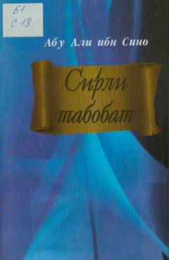

STAbu Ali ibn Sino va Abu Bakr Roziyning go'zallik va tabobatga oid asari.
Ushbu kitob buyuk mutafakkir Abu Ali ibn Sino va Abu Bakr Roziyning inson ko'rkamligi hamda go'zalligiga bag'ishlangan tibbiy merosiga bag'ishlangan. Unda soch to'kilishi, teri muammolari, tish va tirnoq kasalliklarini davolash uchun ishlatiladigan sodda va murakkab dorilar hamda ularning qo'llanilish usullari bayon etilgan. Risola keng kitobxonlar ommasiga hamda tibbiyot tarixiga qiziquvchilarga mo'ljallangan.